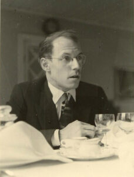
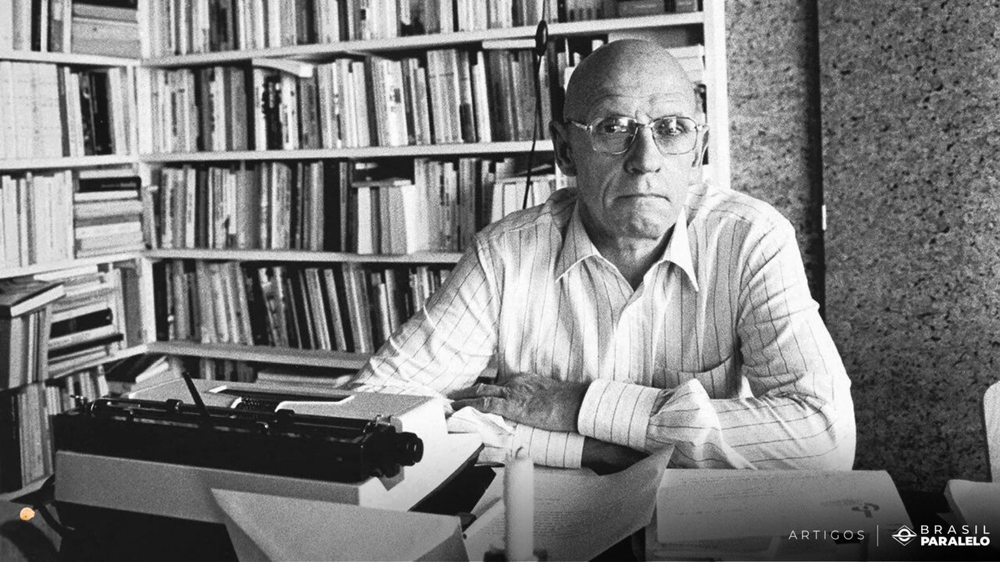
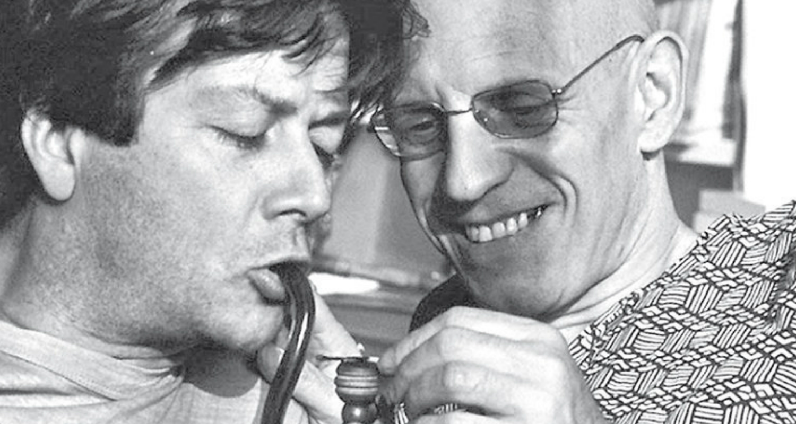
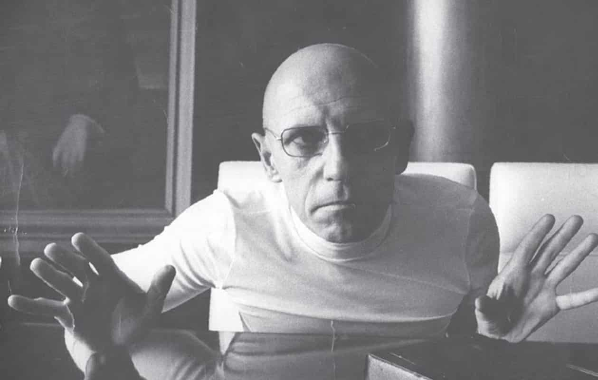
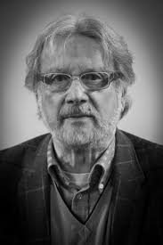

Quem Foi?
Paul-Michel Foucault (pronúncia em francês: [miʃɛl fuko]); (Poitiers, 15 de outubro de 1926 – Paris, 25 de junho de 1984) foi um filósofo, historiador das ideias, teórico social, filólogo, crítico literário e professor da cátedra História dos Sistemas do Pensamento, no célebre Collège de France, de 1970 até 1984 (ano da sua morte). Nascido em Poitiers, na França, em uma família de classe média-alta, Paul-Michel Foucault foi educado no Lycée Henri-IV e tinha uma tensa relação com seu pai, que chegou a interná-lo aos 22 anos de idade acusando-o de ser louco, após tentativa de suicídio. Na idade adulta, Foucault entrou para a Escola Normal Superior de Paris, onde desenvolveu seu interesse por filosofia e teve influência de seus tutores, Jean Hyppolite e Louis Althusser.
Ideias Principais
As principais ideias de Michel Foucault giravam em torno da relação entre poder, conhecimento e controle social. Ele argumenta que o poder não é algo que se possui, mas sim uma rede de relações que molda o conhecimento, as práticas e os indivíduos. Foucault também desenvolveu conceitos como biopoder e panoptismo, e utilizou a genealogia como método para analisar como as relações de poder moldam a história e a exclusão social. Relações de poder e conhecimento: Foucault desafiou a visão tradicional do poder como algo puramente repressivo, argumentando que ele também é produtivo, moldando a forma como pensamos e agimos. Ele explorou como o poder se manifesta através de discursos, instituições e práticas, como escolas e prisões, que disciplinam e controlam os indivíduos. conhecido por suas análises sobre o poder, o conhecimento e as relações entre ambos. Ele defendia que o poder não é algo que se detém ou se exerce, mas sim uma rede complexa de relações que permeia todas as esferas da sociedade, moldando discursos, práticas e instituições.
Influência
Michel Foucault exerceu um impacto significativo na filosofia e no pensamento ocidental contemporâneo, especialmente através de suas análises sobre poder, conhecimento e subjetividade. Sua obra, com foco na relação entre poder e saber, desafiou as concepções tradicionais desses conceitos e reconfigurou a forma como entendemos as relações sociais e as instituições.
Pontos de sua influência
Suas teorias abordam a relação entre poder e conhecimento e como eles são usados como uma forma de controle social por meio de instituições sociais. Embora muitas vezes seja citado como um pós-estruturalista e pós-modernista, Foucault acabou rejeitando esses rótulos, preferindo classificar seu pensamento como uma história crítica da modernidade. Seu pensamento foi muito influente tanto para grupos acadêmicos, quanto para ativistas.
Análise do poder
Foucault deslocou a compreensão do poder de uma visão centrada no Estado para uma análise das microfísicas do poder, presente em diversas instituições e práticas sociais, como escolas, prisões, hospitais e até mesmo o próprio corpo. Ele argumentou que o poder não é algo que se possui, mas algo que se exerce através de relações e discursos. Para Michel Foucault, o poder não é uma entidade estática ou posse, mas sim uma relação dinâmica e exercida em diversas instâncias da sociedade. Foucault rejeita a visão tradicional do poder como algo concentrado em um único ponto, como o Estado, e o analisa como uma rede de relações em constante movimento. O poder, para Foucault, não é apenas repressivo, mas também produtivo, moldando saberes, discursos e práticas sociais.
Panoptismo
Refere-se a um conceito desenvolvido por Jeremy Bentham e posteriormente aprofundado por Michel Foucault, que descreve um sistema de vigilância e controle social. Originalmente, o Panóptico era um projeto arquitetônico de prisão onde um único vigilante poderia observar todos os prisioneiros sem que eles soubessem se estavam sendo observados, criando um estado de vigilância constante e auto-disciplina.
Relação entre poder e saber
Foucault estabeleceu uma conexão intrínseca entre poder e conhecimento, mostrando que o saber não é neutro, mas está intrinsecamente ligado às relações de poder. O conhecimento, segundo ele, é produzido e utilizado para exercer poder, moldando a forma como vemos o mundo e a nós mesmos. via a relação entre poder e saber como intrinsecamente ligada e indissociável. Para ele, o poder não é algo que se exerce apenas de cima para baixo, mas sim uma rede de relações que permeia toda a sociedade e produz conhecimento. O saber, por sua vez, não é neutro, mas moldado pelas relações de poder, sendo utilizado para justificar e manter determinadas estruturas de poder. Biopoder: refere-se a uma forma de poder que se exerce sobre a vida, tanto no nível individual (anátomo-política) quanto no nível populacional (biopolítica). Ele envolve o controle e a regulação da vida biológica, incluindo aspectos como saúde, natalidade, mortalidade e longevidade, através de diversas práticas e tecnologias.
Biopolítica e Subjetividade
Foucault introduziu o conceito de biopolítica, que se refere ao controle e gestão da vida pelas instituições. Ele argumentou que, a partir do século XVIII, o poder passou a incidir sobre a vida das populações, buscando regular aspectos como saúde, natalidade e bem-estar. Sua análise do poder e do saber também levou a uma reflexão sobre a formação da subjetividade. Foucault explorou como as relações de poder moldam a identidade e a forma como nos percebemos como sujeitos. Ele questionou a noção de um sujeito autônomo e universal, argumentando que a subjetividade é construída socialmente e historicamente.
Influência em diversas áreas
A obra de Foucault teve um impacto significativo em diversas áreas do conhecimento, como sociologia, psicologia, estudos culturais, estudos de gênero e teoria literária. Sua análise do poder e do saber influenciou debates sobre temas como a loucura, a sexualidade, a justiça e a política. Em resumo, a obra de Foucault desafiou as concepções tradicionais de poder, conhecimento e subjetividade, oferecendo novas ferramentas para analisar as relações sociais e as instituições. Sua abordagem crítica e genealógica continua a inspirar debates e pesquisas em diversas áreas, tornando-o um dos filósofos mais influentes do século XX e XXI.
Relação Com Seu Parceiro
A relação de Michel Foucault com seu parceiro, Daniel Defert, foi profunda e significativa. Defert foi um ativista e sociólogo francês, e seu relacionamento com Foucault durou muitos anos, sendo marcado por momentos de cumplicidade e também por desafios, como a morte de Foucault devido à AIDS. Daniel Defert (10 de setembro de 1937 — 7 de fevereiro de 2023) foi um ativista francês anti-AIDS e presidente fundador (1984-1991) da primeira associação francesa contra a AIDS, chamada AIDES. Ele fundou a associação após a morte de seu companheiro, o filósofo francês Michel Foucault.
Sexualidade
Michel Foucault, na sua obra "História da Sexualidade", argumenta que a sexualidade não é uma essência natural, mas sim uma construção social e histórica. Ele questiona a ideia de que a sexualidade moderna é resultado de uma repressão e propõe que o poder opera através da produção de discursos e práticas que moldam a maneira como entendemos e vivemos a sexualidade.
Seus Livros
Michel Foucault, um filósofo francês, é conhecido por suas análises sobre o poder, o conhecimento e as relações entre eles, com foco em como as instituições sociais moldam o comportamento humano. Suas obras principais incluem "História da Loucura", "Vigiar e Punir", "A Arqueologia do Saber" e "História da Sexualidade"
História da Loucura (1961): Analisa a evolução da concepção de loucura na sociedade ocidental, explorando como a loucura foi tratada ao longo da história e como as instituições psiquiátricas desempenharam um papel na marginalização de indivíduos considerados loucos.
Vigiar e Punir (1975): Examina o desenvolvimento de sistemas disciplinares, como prisões, escolas e hospitais, e como eles moldam o comportamento humano através da vigilância e da punição.
A Arqueologia do Saber (1969): Apresenta o método arqueológico de Foucault para estudar as disciplinas do conhecimento, investigando como ideias, linguagem e saberes são formados e legitimados ao longo do tempo.
História da Sexualidade (1976-1984): Uma série de livros que investiga como a sexualidade foi construída como objeto de conhecimento e poder, com foco em como as sociedades ocidentais a moldaram.

História da sexualidade: As confissões da carne (Vol. Michel Foucault.
História da sexualidade: O cuidado de si (Vol. Michel Foucault.
História da sexualidade: O uso dos prazeres (Vol. Michel Foucault.
História da sexualidade: A vontade de saber (Vol. Michel Foucault.
Fundação de Seu Marido
Fundação de Defert:
O parceiro de Michel Foucault, Daniel Defert, fundou a associação francesa de combate à AIDS, chamada AIDES, em 1984, após a morte de Foucault de acordo com a Wikipédia. Defert foi o presidente fundador da AIDES, atuando nessa função de 1984 a 1991. A fundação da AIDES foi um ato político importante, impulsionado pela experiência pessoal de Defert com a doença e pela perda de seu parceiro, Foucault, que faleceu devido a complicações relacionadas à AIDS.
A relação de Defert com Foucault foi central em sua vida e influenciou suas escolhas políticas e profissionais, incluindo sua atuação no ativismo contra a AIDS. Defert, que também foi intelectual, acabou se dedicando à causa da AIDS como uma forma de dar continuidade ao legado de Foucault e lutar contra a doença que o vitimou. A trajetória de Defert, incluindo sua militância na AIDES, é vista como um "sismógrafo de nossa história recente", refletindo os desafios e as mudanças sociais relacionadas à AIDS.
